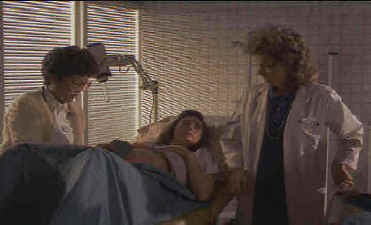

Columbia-Tristar/1988/97m/ANA,WS 1.85, FS 1.33
It’s no accident if this film carries reminders of The Exorcist, Rosemary’s Baby or The Omen. The Seventh Sign is an intelligent thriller about the Apocalypse. With an excellent script that builds logically upon itself and taut direction by Carl Schultz, the film maintains a sense of horror and mystery at the same time. The pieces of this puzzle fit perfectly.
The dream sequences are clipped and progressively revealing. The visual construction of this The Seventh Sign is at all times elegant. Cuts are timed to perfection. This isn’t one of those horror movies that provoke screams. The horror is contained in the intensifying sign by sign path to the inevitable.
 |
| Shades of Rosmary's Baby©Columbia-Tristar |
Demi Moore is
dynamic as Abby Quinn. Moore’s pregnant gait is perfect and her moods appear
consistently credible. There’s a soft fleshiness about her that adds vulnerability.
Jurgen Prochnow floats through the role of David Banner in other worldly fashion.
Excellent contrast balance insures that shadow detail is
maintained in the darker atmospheric scenes. Grain is at a minimum and the transfer
elements are in perfect condition. The Dolby 2-channel surround has excellent separation.
Jack Nitzsche’s fine score with its eerie choral sections envelops the home theater.